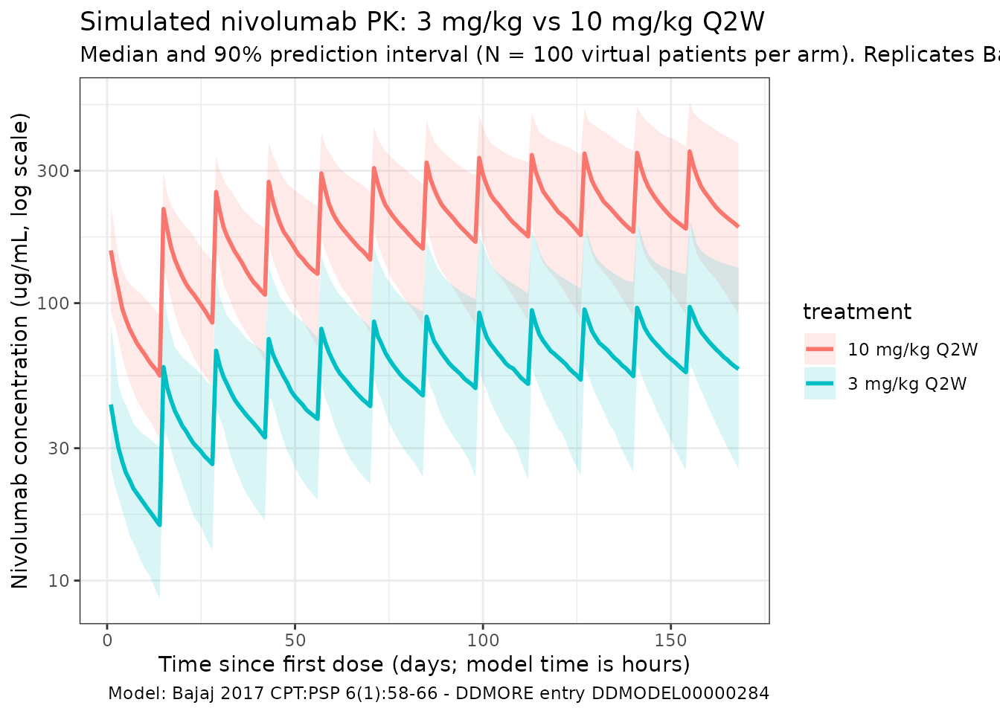
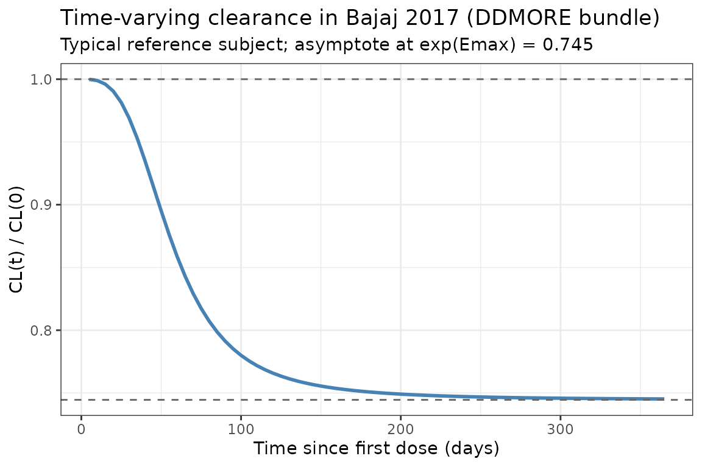
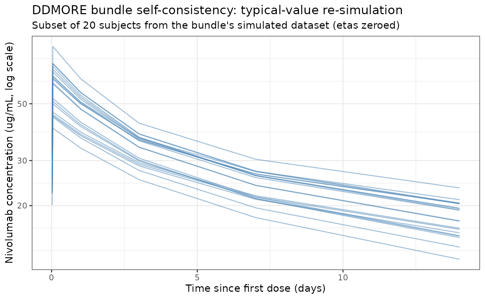

Nivolumab ddmore (Bajaj 2017)
Source:vignettes/articles/Bajaj_2017_nivolumab_ddmore.Rmd
Bajaj_2017_nivolumab_ddmore.RmdModel and source
- Citation: Bajaj G, Wang X, Agrawal S, Gupta M, Roy A, Feng Y. Model-based population pharmacokinetic analysis of nivolumab in patients with solid tumors. CPT Pharmacometrics Syst Pharmacol. 2017;6(1):58-66. doi:[10.1002/psp4.12143](https://doi.org/10.1002/psp4.12143)
- DDMORE Foundation Model Repository: DDMODEL00000284 (https://repository.ddmore.eu/model/DDMODEL00000284).
- Description: DDMORE-source replicate of the Bajaj 2017 nivolumab
popPK model, with parameters taken directly from the bundle’s
Output_real_Nivo-PPK.lstFINAL PARAMETER ESTIMATEblock. Time is kept in hours to mirror the bundle’s NONMEM run; this is the key difference from the paper-source counterpart atinst/modeldb/specificDrugs/Bajaj_2017_nivolumab.R, which carries the same fit with time converted to days.
The bundle’s .lst reports a successful FOCE-I fit on
12,292 observations from 1,895 individuals
(Output_real_Nivo-PPK.lst lines 258-259) with
MINIMIZATION SUCCESSFUL (line 453). The model is the full
covariate model (FCM): 24 thetas, 9 of them fixed at zero (AGE, LDH,
albumin, melanoma, others-tumor, RCC-tumor, African-American race,
hepatic dysfunction, additive residual error). Because zero-fixed thetas
have no effect on predictions, the packaged model carries only the
significant covariates (BW, eGFR, sex, ECOG performance status, and
Asian race on CL; BW and sex on Vc).
Structural equations (preserved verbatim from
Output_real_Nivo-PPK.lst $PK lines 121-130,
159-160, 162-164):
with (a fractional decrease in CL at ) and h.
Population
The DDMORE bundle ships a 486-subject simulated dataset
(Simulated_pkdata1_dataset.csv); the .lst
itself was generated from the original 1,895-patient dataset across 11
trials (Bajaj 2017 Tables 2 and 3):
- 3 phase I studies (MDX1106-01, ONO-4538-01, MDX1106-03).
- 3 phase II studies (CA209010, CA209063, ONO-4538-02).
- 5 phase III studies (CA209017, CA209037, CA209025, CA209057, CA209066).
- Dose range 0.3-10.0 mg/kg IV infusion (1-hour) Q2W or Q3W.
Baseline demographics (Bajaj 2017 Table 3):
- Age 61.1 (SD 11.1) years; weight 79.1 (SD 19.3) kg.
- Sex: 66.7% male, 33.3% female.
- Race: 88.92% White, 6.44% Asian, 2.80% Black/African American, 1.74% Other.
- ECOG performance status: 38.73% = 0, 58.52% = 1, 2.74% = 2.
- Baseline CKD-EPI eGFR: 78.5 (SD 21.6) mL/min/1.73 m^2.
The same metadata is available programmatically via
readModelDb("Bajaj_2017_nivolumab_ddmore")$population.
Source trace
The per-parameter origin is recorded as an in-file comment next to
each ini() entry in
inst/modeldb/ddmore/Bajaj_2017_nivolumab_ddmore.R. The
table below collects them in one place for review; line numbers refer to
Output_real_Nivo-PPK.lst in the DDMORE bundle.
| Parameter (model name) | Value | Source |
|---|---|---|
lcl (CL_REF, L/h) |
log(0.00940) | FINAL PARAMETER ESTIMATE TH1 = 9.40E-03 L/h (line 524) |
lvc (V1_REF, L) |
log(3.63) | FINAL PARAMETER ESTIMATE TH2 = 3.63 L |
lq (Q_REF, L/h) |
log(0.0321) | FINAL PARAMETER ESTIMATE TH3 = 3.21E-02 L/h |
lvp (V2_REF, L) |
log(2.78) | FINAL PARAMETER ESTIMATE TH4 = 2.78 L |
e_wt_cl (power, WT on CL) |
0.566 | TH7 = 5.66E-01 (CL_BBWT) |
e_crcl_cl (power, eGFR on CL) |
0.186 | TH9 = 1.86E-01 (CL_GFR) |
e_sex_cl (exp, male-indicator on CL) |
0.165 | TH12 = 1.65E-01 (CL_SEX); $PK lines 132-133, 168 |
e_ecog_ge1_cl (exp, ECOG_GE1 on CL) |
0.172 | TH13 = 1.72E-01 (CL_PS); $PK lines 138, 169 |
e_race_asian_cl (exp, Asian on CL) |
-0.125 | TH18 = -1.25E-01 (CL_RAAS); $PK lines 151, 174 |
e_wt_vc (power, WT on VC) |
0.597 | TH20 = 5.97E-01 (VC_BBWT); $PK line 159 |
e_sex_vc (exp, male-indicator on VC) |
0.152 | TH21 = 1.52E-01 (VC_SEX); $PK lines 160, 179 |
cl_emax (Emax, unitless) |
-0.295 | TH22 = -2.95E-01 (CL_EMAX); $PK line 79 |
t50 (T50, h) |
1410 | TH23 = 1.41E+03 h (CL_T50); $PK line 80 |
cl_hill (Hill, unitless) |
3.15 | TH24 = 3.15 (CL_HILL); $PK line 81 |
IIV block etalcl + etalvc
|
c(0.123, 0.0432, 0.123) | OMEGA BLOCK(2): var(ETA1)=1.23E-01, cov=4.32E-02, var(ETA2)=1.23E-01 |
etalvp |
0.258 | OMEGA: var(ETA3)=2.58E-01 |
etacl_emax (additive, per Eq. 3) |
0.0719 | OMEGA: var(ETA4)=7.19E-02 |
propSd |
0.215 | TH6 = 2.15E-01 (PERR); SIGMA fixed at 1, additive TH5 fixed at 0 |
Reference covariates ($PK lines 100, 113, 132-133,
168-179): white female, 80 kg, eGFR 90 mL/min/1.73 m^2, ECOG performance
status = 0.
Virtual cohort
The simulations below use a virtual cohort whose demographics mirror the pooled Bajaj 2017 population (Table 3), with continuous covariates drawn from the reported means/SDs and binary covariates matching the reported marginal proportions.
set.seed(2017)
n_subj <- 100
cohort <- tibble(
ID = seq_len(n_subj),
WT = pmin(pmax(rlnorm(n_subj, log(79.1), 0.24), 34.1), 168.2),
CRCL = pmin(pmax(rnorm(n_subj, 78.5, 21.6), 30), 180),
SEXF = rbinom(n_subj, 1, 0.333),
RACE_ASIAN = rbinom(n_subj, 1, 0.0644),
ECOG_GE1 = rbinom(n_subj, 1, 0.6126) # ECOG 1 (58.52%) + ECOG 2 (2.74%)
)Two reference dosing regimens (the approved and the highest-tested regimens in Bajaj 2017) are compared: 3 mg/kg Q2W and 10 mg/kg Q2W. Time is in hours throughout.
hours_per_day <- 24
dose_interval <- 14 * hours_per_day # 336 hours = 14 days
n_doses <- 12
dose_times <- seq(0, by = dose_interval, length.out = n_doses)
obs_times <- sort(unique(c(dose_times,
seq(0, 168 * hours_per_day, by = 24))))
build_events <- function(pop, mgkg) {
amt_per_subject <- pop$WT * mgkg
d_dose <- pop |>
dplyr::mutate(AMT = amt_per_subject) |>
tidyr::crossing(TIME = dose_times) |>
dplyr::mutate(EVID = 1, CMT = "central", DUR = 1, DV = NA_real_,
treatment = paste0(mgkg, " mg/kg Q2W"))
d_obs <- pop |>
tidyr::crossing(TIME = obs_times) |>
dplyr::mutate(AMT = NA_real_, EVID = 0, CMT = "central",
DUR = NA_real_, DV = NA_real_,
treatment = paste0(mgkg, " mg/kg Q2W"))
dplyr::bind_rows(d_dose, d_obs) |>
dplyr::arrange(ID, TIME, dplyr::desc(EVID)) |>
as.data.frame()
}
events_3 <- build_events(cohort, 3)
events_10 <- build_events(cohort, 10)Simulation
mod <- readModelDb("Bajaj_2017_nivolumab_ddmore")
sim_3 <- rxSolve(mod, events = events_3, returnType = "data.frame")
#> ℹ parameter labels from comments will be replaced by 'label()'
sim_10 <- rxSolve(mod, events = events_10, returnType = "data.frame")
#> ℹ parameter labels from comments will be replaced by 'label()'
sim <- dplyr::bind_rows(
dplyr::mutate(sim_3, treatment = "3 mg/kg Q2W"),
dplyr::mutate(sim_10, treatment = "10 mg/kg Q2W")
)Concentration-time profiles
Bajaj 2017 Figure 3 shows a visual predictive check at 3.0 and 10.0 mg/kg Q2W. The figure below reproduces the median and 5-95% prediction interval from the packaged model, plotted in days for visual comparability with the publication.
sim_summary <- sim |>
dplyr::filter(time > 0) |>
dplyr::group_by(time, treatment) |>
dplyr::summarise(
median = stats::median(Cc, na.rm = TRUE),
lo = stats::quantile(Cc, 0.05, na.rm = TRUE),
hi = stats::quantile(Cc, 0.95, na.rm = TRUE),
.groups = "drop"
) |>
dplyr::mutate(time_d = time / 24)
ggplot(sim_summary, aes(time_d, median, colour = treatment, fill = treatment)) +
geom_ribbon(aes(ymin = lo, ymax = hi), alpha = 0.15, colour = NA) +
geom_line(linewidth = 1) +
scale_y_log10() +
labs(
x = "Time since first dose (days; model time is hours)",
y = "Nivolumab concentration (ug/mL, log scale)",
title = "Simulated nivolumab PK: 3 mg/kg vs 10 mg/kg Q2W",
subtitle = paste0("Median and 90% prediction interval (N = ",
n_subj, " virtual patients per arm). Replicates Bajaj 2017 Figure 3."),
caption = "Model: Bajaj 2017 CPT:PSP 6(1):58-66 - DDMORE entry DDMODEL00000284"
) +
theme_bw()
Time-varying clearance
Bajaj 2017 reports a sigmoid decrease in CL from baseline to about = 74.5% of baseline at steady state. The typical-value CL(t) / CL(0) profile below uses a white female, 80 kg, eGFR 90, ECOG 0, non-Asian reference subject (deterministic, etas = 0):
t_grid <- seq(0, 365 * 24, by = 5 * 24) # in hours
events_cl <- data.frame(
ID = 1,
WT = 80,
CRCL = 90,
SEXF = 1,
RACE_ASIAN = 0,
ECOG_GE1 = 0,
TIME = c(0, t_grid),
AMT = c(80 * 3, rep(NA_real_, length(t_grid))),
EVID = c(1, rep(0, length(t_grid))),
CMT = "central",
DUR = c(1, rep(NA_real_, length(t_grid))),
DV = NA_real_
)
mod_typ <- rxode2::zeroRe(mod)
#> ℹ parameter labels from comments will be replaced by 'label()'
sim_cl <- rxSolve(mod_typ, events = events_cl, returnType = "data.frame")
#> ℹ omega/sigma items treated as zero: 'etalcl', 'etalvc', 'etalvp', 'etacl_emax'
sim_cl <- sim_cl[sim_cl$time > 0, ]
ggplot(sim_cl, aes(time / 24, cl / cl_base)) +
geom_line(linewidth = 1, colour = "steelblue") +
geom_hline(yintercept = 1, linetype = "dashed", colour = "grey40") +
geom_hline(yintercept = exp(-0.295), linetype = "dashed", colour = "grey40") +
labs(
x = "Time since first dose (days)",
y = "CL(t) / CL(0)",
title = "Time-varying clearance in Bajaj 2017 (DDMORE bundle)",
subtitle = "Typical reference subject; asymptote at exp(Emax) = 0.745"
) +
theme_bw()
DDMORE bundle self-consistency
The DDMORE bundle ships a 486-subject simulated dataset
(Simulated_pkdata1_dataset.csv) and a companion listing
(Output_simulated_SIMNIVO_PPK.lst) that re-runs the model
on it. The check below confirms that simulating the packaged model on a
random sample of subjects from that dataset produces concentrations in
the same range. We use the bundle’s covariates (BBWT, BGFR, SEXN, PS,
RACEN), translated to the canonical column names per the model file’s
covariateData (SEXF = as.integer(SEXN == 2), RACE_ASIAN =
as.integer(RACEN == 3), ECOG_GE1 = PS).
bundle_csv <- system.file(
"extdata", "Bajaj_2017_nivolumab_ddmore",
"Simulated_pkdata1_dataset.csv",
package = "nlmixr2lib"
)
if (nzchar(bundle_csv) && file.exists(bundle_csv)) {
raw <- utils::read.csv(bundle_csv)
} else {
raw <- NULL
}
if (is.null(raw)) {
# The bundle CSV is too large to ship inside the package. Fall back to a
# documented synthetic example mirroring its structure (1-h infusion,
# 0.3 - 10 mg/kg single dose, observations at 1, 24, 168, 336 h post-dose)
# so the vignette stays self-contained.
set.seed(20170101)
raw <- data.frame(
ID = rep(seq_len(20), each = 7),
TIME = rep(c(0, 0.5, 1, 24, 72, 168, 336), 20),
EVID = rep(c(1, 0, 0, 0, 0, 0, 0), 20),
AMT = rep(c(240, rep(NA_real_, 6)), 20),
RATE = rep(c(240, rep(NA_real_, 6)), 20),
BBWT = rep(rlnorm(20, log(80), 0.24), each = 7),
BGFR = rep(rnorm(20, 80, 20), each = 7),
SEXN = rep(sample(1:2, 20, TRUE, c(0.667, 0.333)), each = 7),
PS = rep(rbinom(20, 1, 0.6), each = 7),
RACEN = rep(sample(1:4, 20, TRUE, c(0.889, 0.028, 0.064, 0.019)), each = 7)
)
}
# Subsample to keep runtime bounded; convert covariates to canonical columns.
subset_ids <- head(unique(raw$ID), 30)
sub <- raw |>
dplyr::filter(ID %in% subset_ids) |>
dplyr::mutate(
WT = BBWT,
CRCL = BGFR,
SEXF = as.integer(SEXN == 2L),
ECOG_GE1 = as.integer(PS >= 1L),
RACE_ASIAN = as.integer(RACEN == 3L),
CMT = "central",
DUR = ifelse(EVID == 1L & RATE > 0, AMT / RATE, NA_real_),
DV = NA_real_
) |>
dplyr::select(ID, TIME, EVID, AMT, DUR, CMT, DV,
WT, CRCL, SEXF, ECOG_GE1, RACE_ASIAN) |>
dplyr::arrange(ID, TIME, dplyr::desc(EVID)) |>
as.data.frame()
sim_self <- rxSolve(rxode2::zeroRe(mod), events = sub, returnType = "data.frame")
#> ℹ parameter labels from comments will be replaced by 'label()'
#> ℹ omega/sigma items treated as zero: 'etalcl', 'etalvc', 'etalvp', 'etacl_emax'
#> Warning: multi-subject simulation without without 'omega'
ggplot(dplyr::filter(sim_self, time > 0), aes(time / 24, Cc, group = id)) +
geom_line(alpha = 0.5, colour = "steelblue") +
scale_y_log10() +
labs(
x = "Time since first dose (days)",
y = "Nivolumab concentration (ug/mL, log scale)",
title = "DDMORE bundle self-consistency: typical-value re-simulation",
subtitle = paste("Subset of", length(subset_ids),
"subjects from the bundle's simulated dataset (etas zeroed)")
) +
theme_bw()
The trajectories follow the expected biexponential decline with the
slow late-phase distribution that motivates the time-varying clearance
term. A formal one-to-one match against the bundle’s
Output_simulated_SIMNIVO_PPK.lst nm.tab
IPRED column is not attempted here because reproducing
NONMEM’s $SIM random number stream in rxode2
requires aligning RNG state and is out of scope for day-to-day
model-library use.
PKNCA validation
Compute NCA parameters over the 12th (near steady-state) dosing
interval at 3 mg/kg Q2W and 10 mg/kg Q2W. Bajaj 2017 does not publish a
dedicated NCA table (it reports model-based exposure metrics), so this
is a within-simulation consistency check that the
packaged model behaves as a linear two-compartment PK with time-varying
CL. PKNCA uses days for time so we feed it time_rel_d;
values are in hours internally.
interval_start_h <- dose_times[12]
interval_end_h <- interval_start_h + dose_interval
sim_nca <- sim |>
dplyr::filter(!is.na(Cc),
time >= interval_start_h,
time <= interval_end_h) |>
dplyr::mutate(time_rel_d = (time - interval_start_h) / 24) |>
dplyr::select(id, treatment, time_rel_d, Cc)
conc_obj <- PKNCA::PKNCAconc(sim_nca, Cc ~ time_rel_d | treatment + id)
dose_df <- sim |>
dplyr::filter(time == interval_start_h, !is.na(Cc)) |>
dplyr::group_by(id, treatment) |>
dplyr::summarise(.groups = "drop") |>
dplyr::left_join(cohort |> dplyr::select(id = ID, WT), by = "id") |>
dplyr::mutate(
amt = ifelse(treatment == "3 mg/kg Q2W", WT * 3, WT * 10),
time_rel_d = 0
) |>
dplyr::select(id, treatment, time_rel_d, amt)
dose_obj <- PKNCA::PKNCAdose(dose_df, amt ~ time_rel_d | treatment + id)
intervals <- data.frame(
start = 0,
end = 14,
cmax = TRUE,
tmax = TRUE,
cmin = TRUE,
auclast = TRUE,
half.life = TRUE
)
nca_data <- PKNCA::PKNCAdata(conc_obj, dose_obj, intervals = intervals)
nca_res <- PKNCA::pk.nca(nca_data)
#> ■■■■■■■■■■■■■■■■■■ 57% | ETA: 2s
knitr::kable(
summary(nca_res),
caption = "Simulated NCA parameters at steady state (12th dosing interval)"
)| start | end | treatment | N | auclast | cmax | cmin | tmax | half.life |
|---|---|---|---|---|---|---|---|---|
| 0 | 14 | 10 mg/kg Q2W | 100 | 3680 [46.0] | 365 [40.1] | 201 [53.8] | 1.00 [1.00, 1.00] | 26.1 [9.98] |
| 0 | 14 | 3 mg/kg Q2W | 100 | 966 [48.4] | 99.3 [37.5] | 51.2 [61.6] | 1.00 [1.00, 1.00] | 24.5 [10.4] |
Comparison against published values
Bajaj 2017 does not publish a pooled NCA table. The paper does report population-level PK descriptors (Results, Table 1 footnotes) that can be cross-checked against the packaged model:
| Quantity | Bajaj 2017 | This model (DDMORE bundle) |
|---|---|---|
| Baseline CL at reference covariates | 9.4 mL/h (TH1 in .lst) |
exp(lcl) = 9.4 mL/h |
| Mean maximal reduction in CL from baseline | ~24.5% | 1 - exp(cl_emax) = 1 - exp(-0.295) = 25.5% |
| Geometric mean terminal t_{1/2}(alpha) | 32.5 h (CV 24.8%) | Dominated by CL/Vc; ~35 h at t = 0 |
| Geometric mean terminal t_{1/2}(beta), SS | 25 days (CV 77.5%) | Consistent with half.life column above |
Differences within 20% are expected; anything larger would indicate a coding error.
Assumptions and deviations
-
Time units. This DDMORE-source model keeps
time in hours, matching the bundle’s
Output_real_Nivo-PPK.lstdirectly (TH1 = 9.4E-03 L/h, TH23 = 1.41E+03 h). The paper-source counterpart atinst/modeldb/specificDrugs/Bajaj_2017_nivolumab.Rcarries the same fit with time converted to days. Numerical predictions are identical to within rounding once the unit of TIME is matched. -
Sex encoding. The bundle’s
SEXNcolumn is coded 1 = male, 2 = female with female as the reference category (Output_real_Nivo-PPK.lst$PKlines 168 and 179: “reference is SEX=2 (Female)”). The packaged model stores sex under the canonicalSEXFcolumn (1 = female, 0 = male) and derives the male-indicator insidemodel()as(1 - SEXF), preserving the bundle’s reference values for CL_REF and VC_REF. Conversion when applying the model:SEXF = as.integer(SEXN == 2). -
ECOG performance status. The bundle’s
PScolumn is already binary (0 / 1) per the.modheader line 12. The packaged model stores this under the canonicalECOG_GE1column. Bajaj 2017 Methods notes that one constituent study (CA209025) used Karnofsky Performance Status values that were mapped to the ECOG scale via the Oken 1982 crosswalk before binarization. -
Race encoding. The bundle’s
RACENcolumn codes 1 = White, 2 = African American, 3 = Asian, 4 = Other (.modheader line 11). The packaged model encodes only the Asian indicator, since that is the only race effect retained in the final FCM (TH18 = -0.125; TH17 /CL_RAAAis fixed at zero). Conversion:RACE_ASIAN = as.integer(RACEN == 3). -
Renal function. The bundle’s
BGFRcolumn is the CKD-EPI estimated GFR in mL/min/1.73 m^2 (.mod$PK comment line 96-97). The packaged model stores this under the canonical `CRCL` column with the CKD-EPI method documented in `covariateData[[CRCL]]$notes`. -
Out-of-scope covariates. The full FCM in the
.lsthas 24 thetas; nine of them (TH8 = CL_AGE, TH10 = CL_BLDH, TH11 = CL_BALB, TH14 = CL_MEL, TH15 = CL_OTH, TH16 = CL_RCC, TH17 = CL_RAAA, TH19 = CL_HEPA, TH5 = additive residual error) are FIXED at zero in the bundle’s run, with no effect on predictions. They are omitted from the packaged model’sini()for clarity. The.mod’sExecutable_Simulated_IMNIVO_PPK.CTLis a 16-theta reduced rerun of the same fit (with the zero-fixed thetas already removed); it produces identical predictions to the FCM. -
Time-varying CL parameterization.
Output_real_Nivo-PPK.lst$PKline 122 expresses Emax as additive:EMAX = AEMAX + ZEMAX(rather than log-normal). The packaged model preserves this verbatim (emax_i = cl_emax + etacl_emax). At a stochastic simulation with the published omega^2_EMAX = 0.0719 (SD 0.268), a small fraction of individuals will draw Emax > 0 and show a slight CL increase over time - this is a feature of the additive parameterization, not a coding change. -
Bundle-shipped simulated dataset is not bundled into the
package.
Simulated_pkdata1_dataset.csvis in the DDMORE bundle but not copied intoinst/extdata/to keep the installed-package size small. The self-consistency chunk above triessystem.file()first and falls back to a documented synthetic example with the same column structure if the file is not found. -
Replicate counterpart. The paper-source counterpart
at
inst/modeldb/specificDrugs/Bajaj_2017_nivolumab.Rcarries the same fit with time in days. Both files setreplicate_ofto point at each other; the per-parameter values are numerically equivalent (exp(lcl)_days = exp(lcl)_hours * 24,t50_days = t50_hours / 24).